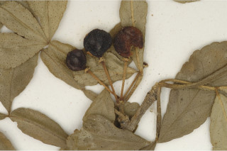
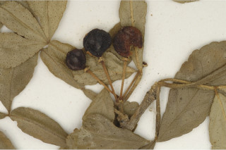

Trees up to 8 m tall.
8 ಮೀ ಎತ್ತರದವರೆಗಿನ ಮರಗಳು.
Trees up to 8 m tall.
மரங்கள் 8 மீ. உயரம் வரை வளரக்கூடியது.
Trunk with branched thorns; bark dark grey, smooth; blaze yellowish.
ಕಾಂಡ ಕವಲುಗೊಂಡ ದೊಡ್ಡ ಮುಳ್ಳುಗಳ ಸಮೇತವಿರುತ್ತದೆ;ತೊಗಟೆ ದಟ್ಟ ಬೂದು ಬಣ್ಣ ಹೊಂದಿದ್ದು, ನಯವಾಗಿರುತ್ತದೆ;ಕಚ್ಚು ಮಾಡಿದ ಜಾಗ ಹಳದಿ ಛಾಯೆ ಹೊಂದಿರುತ್ತದೆ.
Trunk with branched thorns; bark dark grey, smooth; blaze yellowish.
மரத்தின் நடுத்தண்டின் தளப்பகுதியில் கிளைத்த முட்களுடையது; மரத்தின் பட்டை கரும்சாம்பல் நிறமானது, வழுவழுப்பானது; உள்பட்டை மஞ்சள் நிறமானது.
Young branchlets terete, glabrous, thorny.
ಎಳೆಯ ಕಿರುಕೊಂಬೆಗಳು ದುಂಡಾಕಾರ ಹೊಂದಿದ್ದು ರೋಮರಹಿತವಾಗಿರುತ್ತವೆ,ದೊಡ್ಡ ಮುಳ್ಳುಗಳ ಸಮೇತವಿರುತ್ತವೆ.
Young branchlets terete, glabrous, thorny.
சிறியநுனிக்கிளைகள் குறுக்குவெட்டுத் தோற்றத்தில் வளையமானது, உரோமங்களற்றது, முட்களுடையது.
Leaves compound, imparipinnate, to 15 cm long, alternate, spiral; rachis with oblanceolate wings, glabrous; leaflets 5-7, opposite, sessile, 2-4.5 x 1-1.5 cm, elliptic to obovate, apex emarginate or obtuse, base acute, margin crenulate or irregularly serrulate, glandular punctate, glabrous; secondary_nerves 7-10 pairs, looped near margin; tertiary_nerves admedially ramified.
ಎಲೆಗಳು ಸಂಯುಕ್ತ ಹಾಗೂ ಅಸಮಗರಿ ರೂಪಿ ಮಾದರಿಯಲ್ಲಿದ್ದು 15 ಸೆಂ.ಮೀ. ವರೆಗಿನ ಉದ್ದವಿದ್ದು ಪರ್ಯಾಯ ಮತ್ತು ಸುತ್ತು ಜೋಡನಾ ವ್ಯವಸ್ಥೆಯಲ್ಲಿರುತ್ತವೆ;ಅಕ್ಷದಿಂಡು ಬುಗುರಿ-ಭರ್ಜಿಯಾಕಾರದ ರೆಕ್ಕೆಗಳ ಸಮೇತವಿರುತ್ತವೆ ಹಾಗೂ ರೋಮರಹಿತವಾಗಿರುತ್ತವೆ; ಉಪಪತ್ರಗಳು 5 ರಿಂದ 7 ಇದ್ದು ಅಭಿಮುಖಿಗಳಾಗಿದ್ದು,ತೊಟ್ಟುರಹಿತವಾಗಿರುತ್ತವೆ, ರೋಮರಹಿತವಾಗಿರುತ್ತವೆ ಮತ್ತು 2 -4.5 X 1 -1.5 ಸೆಂ.ಮೀ ಗಾತ್ರ, ಅಂಡವೃತ್ತದಿಂದ ಬುಗುರಿಯವರೆಗಿನ ಆಕಾರ, ದೀರ್ಘ ಕಚ್ಚುಳ್ಳ ಅಗ್ರದಿಂದ ಕೂಡಿದ ಅಥವಾ ಚೂಪಲ್ಲದ ರೀತಿಯ ತುದಿ,ಚೂಪಾದ ಬುಡ, ಸೂಕ್ಷ್ಮವಾದ ಗರಗಸ ದಂತಿತವಾದ ಮಾದರಿಯ ತುದಿ, ಚೂಪಾದ ಬುಡ,ಸೂಕ್ಷ್ಮ ದುಂಡೇಣುಗಳನ್ನೊಳಗೊಂಡ ಅಥವಾ ಅನಿಯತ ಗರಗಸ ದಂತಿತವಾದ ಅಂಚು, ಮಚ್ಚೆ ರೀತಿಯ ರಸಗ್ರಂಥಿಗಳ ಸಮೇತವಿದ್ದು ರೋಮರಹಿತ -ವಾಗಿರುತ್ತವೆ; ಎರಡನೇ ದರ್ಜೆಯ ನಾಳಗಳು ಅಂದಾಜು 7 ರಿಂದ 10 ಜೋಡಿಗಳಿದ್ದು ಅಂಚಿನ ಬಳಿ ಕುಣಿಕೆಗೊಂಡಿರುತ್ತವೆ;ಮೂರನೇ ದರ್ಜೆಯ ನಾಳಗಳ ಕವಲುಗಳು ಎಲೆಗಳ ಅಕ್ಷದ ಕಡೆಗಿರುತ್ತವೆ.
Leaves compound, imparipinnate, to 15 cm long, alternate, spiral; rachis with oblanceolate wings, glabrous; leaflets 5-7, opposite, sessile, 2-4.5 x 1-1.5 cm, elliptic to obovate, apex emarginate or obtuse, base acute, margin crenulate or irregularly serrulate, glandular punctate, glabrous; secondary_nerves 7-10 pairs, looped near margin; tertiary_nerves admedially ramified.
இலைகள் கூட்டிலை, ஒற்றைபடை சிறகு வடிவக்கூட்டிலைகள், 15 செ.மீ. நீளமானது, மாற்றுஅடுக்கமானவை, சுழல் போன்று அமைந்தவை; மத்தியகாம்பு (ராக்கிஸ்) இறகுடையது, உரோமங்களற்றது; சிற்றிலை 5-7, எதிரடுக்கமானவை, காம்பற்றது, 2-4.5 X 1-1.5 செ.மீ., நீள்வட்ட வடிவானது முதல் தலைகீழ் முட்டை வடிவானது, அலகின் நுனி பள்ளங்களுடையது (ஈமார்ஜினேட்) அல்லது மெட்டையானது, அலகின் தளம் கூரியது, அலகின் விளிம்பு சிறிய பிறை போன்ற பற்களுடையது அல்லது ஒழுங்கற்ற சிறிய ரம்ப பற்களுடையது, ஒளிபுகும் சுரப்பி புள்ளிகளுடையது, உரோமங்களற்றது; இரண்டாம் நிலை நரம்புகள் 7-10 ஜோடிகள், ஒன்றொடுன்று விளிம்பின் அருகில் (லுப்) இணைந்தவை; மூன்றாம் நிலை நரம்புகள் அட்மீடியல்லி ராமிபைடு.
Inflorescence axillary subumbellate; pedicel 1 cm long.
ಪುಷ್ಪಮಂಜರಿಗಳು ಅಕ್ಷಾಕಂಕುಳಿನಲ್ಲಿನ ಉಪ-ಪೀಠಛತ್ರ ಮಾದರಿಯವು; ತೊಟ್ಟು 1 ಸೆಂ.ಮೀ. ಉದ್ದವಿರುತ್ತದೆ.
Inflorescence axillary subumbellate; pedicel 1 cm long.
மஞ்சரி இலைக்கோணங்களில் காணப்படுபவை, அம்பல் வகை போன்றது; மலர்காம்பு 1 செ.மீ. நீளமானது.
Berry, globose; seeds 1-4.
ಬೆರ್ರಿ ಗೋಳಾಕಾರದಲ್ಲಿರುತ್ತದೆ;ಬೀಜಗಳ ಸಂಖ್ಯೆ 1 ರಿಂದ 4.
Berry, globose; seeds 1-4.
முழுச்சதைகனி (பெர்ரி), கோள வடிவமானது; விதைகள் 1-4.
 
